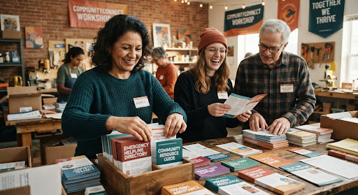

Building Bridges in Every Neighborhood
Learn about our civic mission, the team behind the platform, and how we empower residents to access vital community care across every municipal ward.
From Southside mutual aid tables to downtown civic hearings, we equip neighborhoods with authentic data sovereignty.
A Community-First Demo Project
Accountable solely to public trust, neighborhood councils, and resident welfare. We maintain absolute vendor independence and zero programmatic advertising.
Serving 24 city wards in English & Spanish
Our Purpose & Promise
“To ensure every resident, regardless of zip code or background, has instantaneous, equitable access to essential human services, civic resources, and community power.”
“A deeply connected, resilient city where neighbors support neighbors and grassroots organizations thrive through shared transparency and open technology.”
From a Paper Flyer to a Digital Civic Lifeline
In November 2021, severe flash flooding and sub-freezing emergency storms paralyzed three historic districts across our metro area. City power grids buckled, and emergency telephone switches buckled under catastrophic call volumes.
A small collective of neighborhood teachers, social caseworkers, and civic hackers gathered inside a parish basement. Armed only with a photocopier, dry-erase markers, and folding tables, they verified open warming shelters, hot meal kitchens, and mobile diaper pantries onto double-sided bilingual paper flyers delivered house-to-house.
What started as an urgent four-page crisis handout swiftly proved an undeniable civic reality: the existing municipal information system was fractured, stale, and inaccessible to non-English speakers.
In this fictional story, CommunityConnect grows into a civic resource network serving 24 wards. This portfolio project is not a registered nonprofit or a verified service provider.

The Four Foundations of Trust
How we engineer our software, structure field audits, and guarantee civil protection for everyone who visits.
Radical Accessibility
Zero paywalls. Mobile-first design engineered to run flawlessly on low-bandwidth networks, budget smartphones, and text-only civic screen readers.
Trust and Transparency (Demo)
In a real service, hours and eligibility would be reviewed regularly. Here, every listing is fictional sample data.
Community Sovereignty
Strict privacy-first architecture. Zero invasive tracking, zero cookie-brokers, and community-owned open governance standards.
Collaborative Ecosystem
Cross-pollinating between city municipal agencies, local food banks, grassroots mutual aid networks, and trusted faith-based sanctuaries.
Community Impact Snapshot
All figures below are fictional demo metrics.
Measuring real reduction in human suffering, wait times, and bureaucratic friction across our metropolitan network.
Residents Served
Connected to emergency rent grants, community legal desks, pantry distributions, and mobile clinics.
Inquiry Success Rate
Searches resulted in operational, open services matching the applicant’s specific requirements.
Avg. Minutes Saved
Reduced navigation time per user compared to outdated municipal phone directories and broken links.
Monthly Assistance Inquiries by Core Need
Aggregate anonymous requests processed across all 24 wards
Team & Community Advisory Board
Composed of neighborhood navigators, public data engineers, and frontline social workers living directly within the communities we serve.
Elena Rodriguez-Vance
Executive Director
Former municipal housing advocate with 14 years organizing grassroots housing rights and anti-displacement clinics.
Marcus Chen, MSW
Head of Community Navigation
Master of Social Work directing our frontline volunteer verification teams across food banks and respite beds.
Sofia Morales-Ortiz
Bilingual Outreach Lead
Spearheads immigrant rights workshops, language equity audits, and Spanish-first community mutual aid coalitions.
Tariq Al-Mansoor
Civic Data Specialist
Open-data architect building fault-tolerant scrapers, geocoding engines, and privacy-shielded demographic telemetry.
12-Seat Neighborhood Advisory Council
Elected annually by local mutual aid captains and church pastors to hold our data verification metrics, executive compensation, and privacy policies accountable.
Join Our Network of Volunteer Navigators
You don’t need technical coding experience to protect your neighbors. Spend two hours a month field-auditing food distributions, confirming transit stops, or assisting elderly residents with online forms.
Certified Navigation Training
An illustrative training pathway for respectful communication and privacy. No actual course enrollment is offered.
Flexible Micro-Shifts
Audit entries from your phone during your daily commute or volunteer directly at Saturday pop-up resource tables.
Official Civic Credentialing
This demo illustrates how a real program might recognize volunteer contributions. No credential or service hours are issued.
Try the Volunteer Form
Demo ApplicationExplore the volunteer application with sample details. This demo does not send or store your personal information.